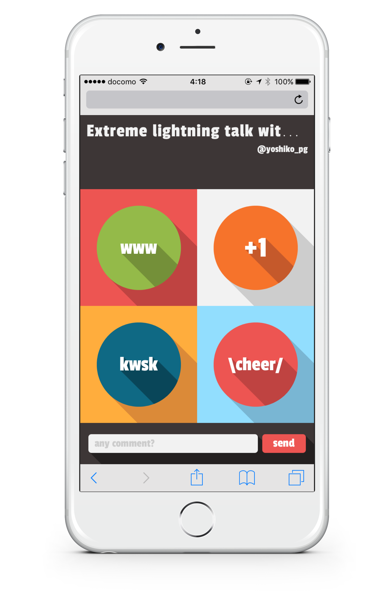

<html>
<head>
  <title>TODO: タイトル入れる - @yoshiko_pg</title>
  <link rel="stylesheet" href="lib/talkie.min.css">
  <link rel="stylesheet" href="lib/talkie-default.min.css">
  <link rel="stylesheet" href="lib/hljs-styles/railscasts.css">
  <link rel="stylesheet" href="dest/style.css">
</head>
<body>

<script layout="cover" invert type="text/x-markdown"
  backface="image/cover.jpg" backface-filter="blur(1px) brightness(.7)">
# milkcocoaでエクストリームライトニングトーク

2015.9.29 [@yoshiko_pg](http://yoshiko-pg.github.io)
</script>


<script layout="bullets" invert type="text/x-markdown"
  backface="image/bg-profile.png" backface-filter="blur(2px) brightness(.4)">

## 自己紹介


よしこ [@yoshiko_pg](https://twitter.com/yoshiko_pg)

Frontend engineer at <a href="http://goodpatch.com/jp"></a>

</script>


<script layout type="text/x-markdown">
# 今日は
## エクストリームな<br>ライトニングトークをします
</script>


<script layout type="text/x-markdown">
## さっそくですが
</script>


<script layout="cover" invert type="text/x-markdown"
  backface="image/don.jpg" backface-filter="blur(2px) brightness(.3)">
### お手持ちのスマートフォンで！

## http://bit.ly/mkgirls
</script>


<script layout type="text/x-markdown">
## 開けました？
</script>


<script layout type="text/x-markdown">

</script>


<script layout type="text/x-markdown">
LT中って、自分が喋ってるだけでちょっと寂しいので  

リアクションをもらえるリモコンをつくってみました
</script>


<script layout type="text/x-markdown">
## 面白いとき

</script>


<script layout type="text/x-markdown">
## いいね！なとき

</script>


<script layout type="text/x-markdown">
## 詳しく聞きたいとき

</script>


<script layout type="text/x-markdown">
## 応援したいとき

</script>


<script layout type="text/x-markdown">
## フリーコメント

</script>


<script layout="bullets-invert" type="text/x-markdown">
## じゃあ、今から通信部分の<br>コードの解説しますので
</script>


<script layout="bullets-invert" type="text/x-markdown">
## リアクション<br>よろしくお願いしますね。
</script>


<script layout="cover" invert type="text/x-markdown"
  backface="image/milkcocoa.png" backface-filter="blur(2px) brightness(.3)">
# 30秒でできる
# Milkcocoaで
# リアルタイム通信
</script>


<script layout="code" type="text/x-markdown">
データ受け取る側・送る側共に
dataStoreを作ります

```javascript
const milkcocoa = new MilkCocoa("yourAppId.mlkcca.com");
const datastore = milkcocoa.dataStore('slide/20150929');
```
</script>


<script layout="code" type="text/x-markdown">
送る側は DataStore.send でデータを送れます

```javascript
datastore.send({message: 'Hello world!!'});
```
</script>


<script layout="code" type="text/x-markdown">
受け取る側はsendをリッスンしておく

```javascript
datastore.on('send', (data) => {
  console.log(data.value.message);
});
```

送った値はdata.valueに入ります
</script>


<script layout="cover" invert type="text/x-markdown"
  backface="image/cat.jpg" backface-filter="blur(2px) brightness(.5)">
# これだけ

あとはCSSとかdomいじりがんばる
</script>


<script layout="code" type="text/x-markdown">
ちなみに草の生やし方

```css
.www {
  position: absolute;
  left: 100%;
  top: 0; /* あとでrandom() */
  transition: left 6s linear;
}
.www.move {
  left: -100%;
}
```
</script>


<script layout="code" type="text/x-markdown">
datastore.onのコールバック内
メッセージを受信したらbodyに草を追加

```javascript
let el = document.createElement('div');
el.classList.add('www');
el.style.top = getRandPer() + '%';
document.body.appendChild(el);

setTimeout(() => {
  el.classList.add('move');
}, 100);
```
</script>


<script layout="code" type="text/x-markdown">
Transitionが終わったら要素を削除

TransitionEndはトランジションを指定したプロパティの数だけ発火するので  
最初に発火したときにイベントリスナを削除する

```javascript
el.addEventListener("webkitTransitionEnd",
  function callback(event) {
    document.body.removeChild(el);
    el.removeEventListener("webkitTransitionEnd", callback);
  },
false);
```
</script>


<script layout type="text/x-markdown">
# リアクションできて<br>便利ですね
</script>


<script layout type="text/x-markdown">
# これだけじゃ<br>つまんない？
</script>


<script layout="cover" invert type="text/x-markdown"
  backface="image/don.jpg" backface-filter="blur(2px) brightness(.3)">
# more communication
</script>


<script layout type="text/x-markdown" vote>
## 質問

エディタはどれ派？

 * Emacs
 * Vim
 * Sublime Text
 * Atom
 * 秀丸
</script>


<script layout type="text/x-markdown" vote>
## 質問

false <- なんてよむ？

 * ふぉるす
 * ふぁるす
</script>


<script layout type="text/x-markdown" vote>
## 質問

char <- なんてよむ？

 * ちゃー
 * きゃら
</script>


<script layout type="text/x-markdown" vote>
## 質問

gif <- なんてよむ？

 * ぎふ
 * じふ
</script>


<script layout type="text/x-markdown" vote>
## 質問

width <- なんてよむ？

 * うぃどぅす
 * うぃず
 * わいず
</script>


<script layout type="text/x-markdown" vote>
## 質問

app <- なんてよむ？

 * あっぷ
 * あぷぷ
 * えーぴーぴー
</script>


<script layout="bullets" type="text/x-markdown">
## なんかまとめ
</script>


<script layout="cover" invert type="text/x-markdown"
  backface="image/end.gif" backface-filter="blur(3px) brightness(.4)">
# Thank you
[@yoshiko_pg](http://yoshiko-pg.github.io/)
</script>


<script layout="bullets-invert" type="text/x-markdown">
# おまけ
</script>


<script src="lib/highlight.min.js"></script>
<script src="lib/talkie.min.js"></script>
<script src="https://cdn.mlkcca.com/v2.0.0/milkcocoa.js"></script>
<script src="https://cdnjs.cloudflare.com/ajax/libs/bacon.js/0.7.73/Bacon.min.js"></script>
<script>
window.talkie = Talkie();

// リンクは別タブ
var i, links = document.querySelectorAll("a[href^='http']")
for(i=0; i<links.length; i++) {
  links[i].setAttribute('target', '_blank');
}
</script>
<script src="dest/script.js"></script>
</body>
</html>
